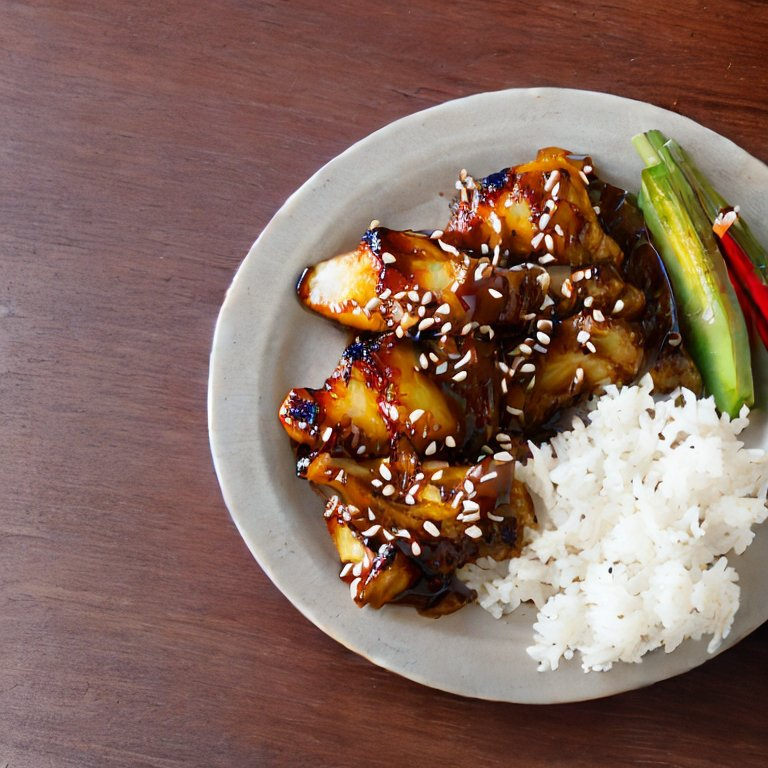

Teriyaki Pinapple Chicken

Teriyaki Pinapple Chicken is both sweet and salty dish with very little prep work, however
it is recommended to marinate the chicken for at least an hour to let
the flavor soak through before cooking. The chicken can be left unattended during this time, or if you
simply cannot wait, go ahead and cook it sooner. This dish is excellent with a wide variety of veggies,
so many in fact, I couldn't decide which to recommend. If you are like me and are adding a lot of vegetables
you may need to make a little more to the sauce mixture. The sauce is quite strong and only a drizzle is needed on the
vegetables, which this recipie will leave you with, but if you need several drizzles for a bad amount of veggies, add
add more of everything keeping the ratio at about the same.
Ingredients
- Chicken 1 lb: although breast is a great go to, if you want to use any other part, go for it, I am not going to tell you how to live your life.
- Soy Sauce 1 cup
- Teriyaki Sauce 1/4 cup
- pineapple 1/4 cup
- Brown sugar 1.5 Tbsp
- Garlic 4 cloves
- Ginger 1 Tbsp
- Your choice of Veggies: See notice above if adding several kinds of vegetables
Steps
Prepare Marinade
- Peel and mash or mince ginger and garlic
- Blend about 3/4 of the pinapple and mince or dice the remaining
- Mix garlic, ginger, brown sugar, pinapple, soysauce and teriyaki in a mixing bowl
- Cut chicken into desired shape (e.g. strips cubes or fillets)
- Add chickento small bowl and pour soy sauce marinade on top until chicken is nearly covered
remember to save a drizzle or more for any veggies you also prepare
- Let chicken sit for 1 - 3 hours in the fridge
Cook the Chicken
- In a Medium saucepan, add 2 tsp of oil on medium heat
- Take chicken out of sauce and place on pan
- Let cook for 4-5 minutes per side
Cook Veggies
- On an appropriate sized pan, pour a drizzle of oil on medium-high heat.
- Add veggies according to cook time (mushrooms onions and carrots take longer than sprouts bell peppers and cabbage)
- Once veggies are cooked, turn heat to low and add drizzle of soy sauce marinade